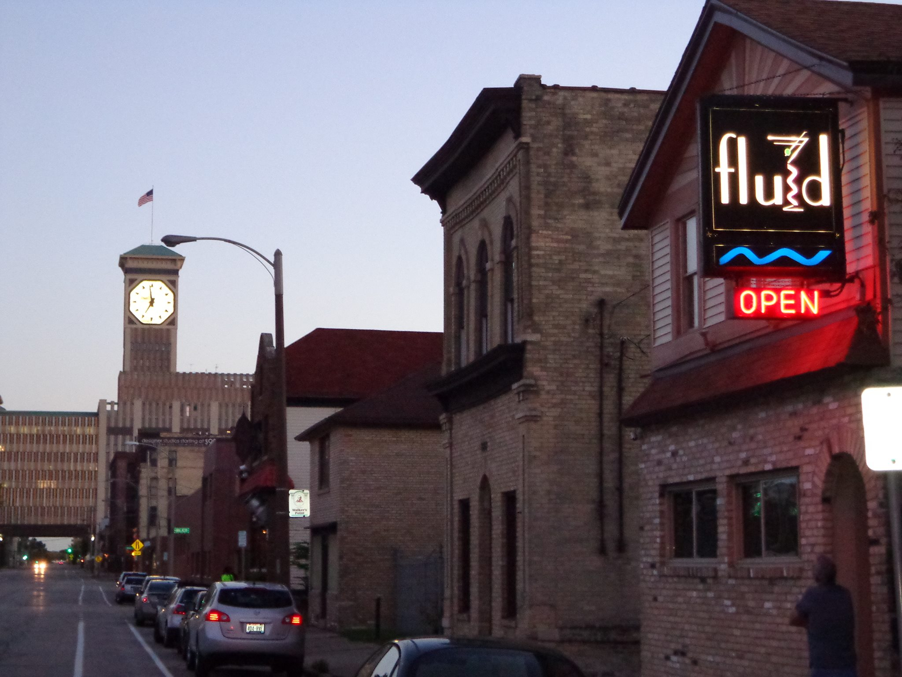
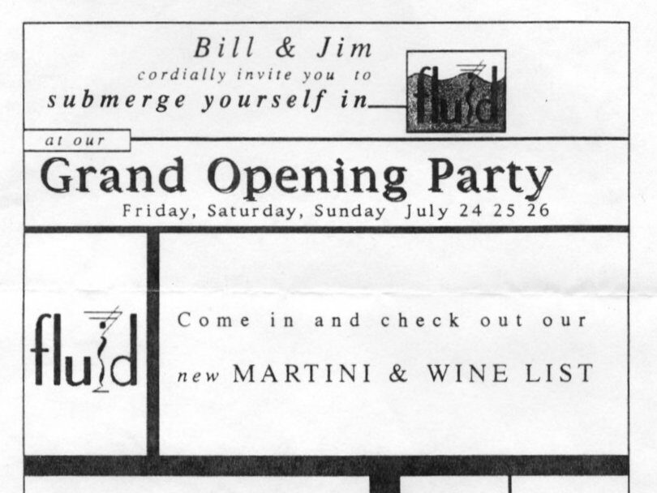
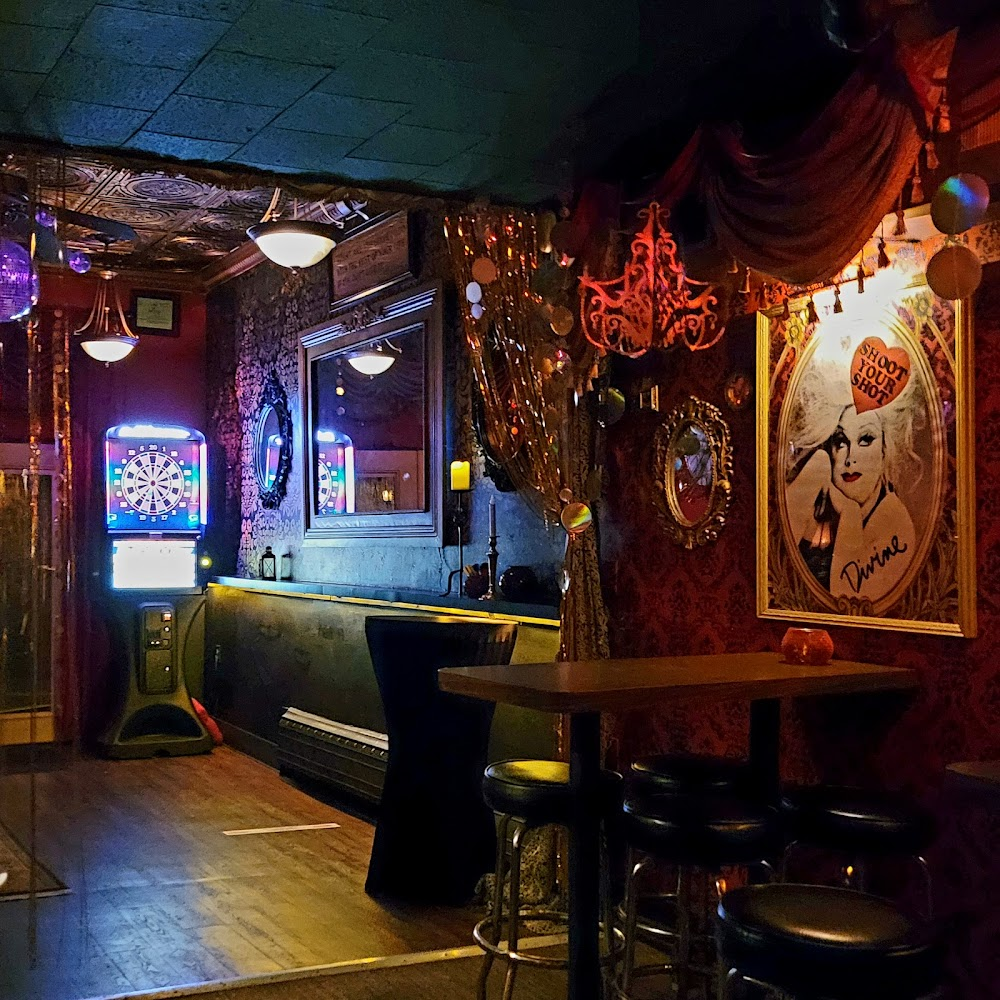
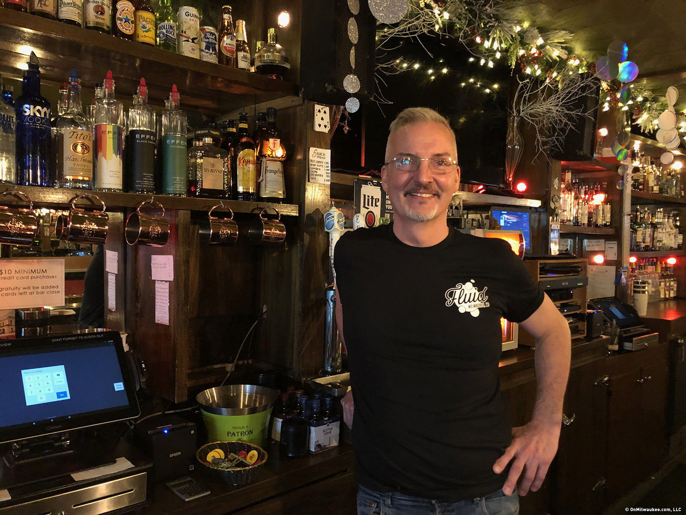
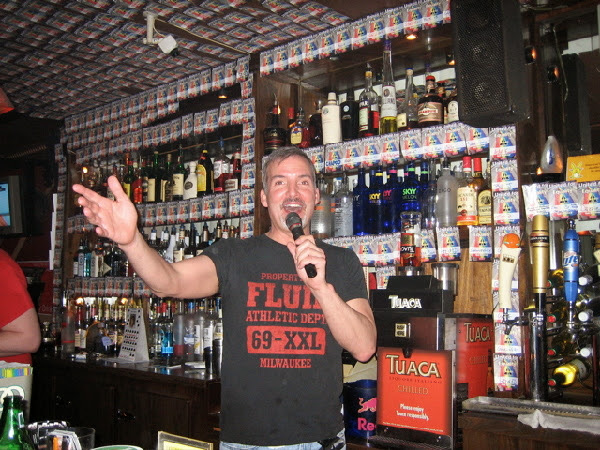

About Fluid
“Honest drinks, real community, and queer history you can feel in the walls.”
A Unique Journey
Fluid sits at 819 S 2nd Street, a building that’s been home to LGBTQ+ spaces for over 80 years. From the Friendly Bar in the 1940s to Zippers in the ’90s, this address has held space for queer Milwaukee through every era. Fluid, opened in 1998, is the eighth LGBTQ+ bar to operate here—and the longest lasting.

How It Started
Fluid was founded by two bartenders from the Triangle, including current owner Bill Wardlow. It opened as a neighborhood bar with no gimmicks and no dress code. Just good music, better drinks, and a friendly place to start your night. The bar quickly became known for its martinis and its location—just a short walk from the iconic La Cage.


One Owner. One Vision.
A Vision Worth Recognizing
After a few years, Bill took over full ownership and gave the bar a renewed sense of identity. Over time, Fluid evolved from a mostly men’s bar into a fully inclusive LGBTQ+ space—without losing its laid-back roots. The vibe is still low-pressure, welcoming, and consistent. That’s intentional.
In February 2024, Bill Wardlow was honored by the City of Milwaukee with a civic proclamation declaring it “Bill Wardlow Day.” The award recognized his decades of work as a bar owner, advocate, and community figure. From helping preserve LGBTQ+ history to creating inclusive space for every letter in the acronym—Bill’s never done it for attention, but the recognition hit right.

